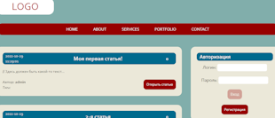

Портфолио
Использовались: React, Vite, React Router, Sass и Netlify.

"Нулевые" блоки для сайта на Тильде.
Страницы с блоками не находятся в открытом доступе,
тем не менее два из них можно увидеть на CodePen-е по ссылкам:
"Психологический портрет" и "Матрица души".
Использовались: Sass и Gulp.
"Менеджер контактов" и его исходный код.
Использовались: Sass и Vue.
Исходный код сайта-портфолио, на котором вы сейчас находитесь.
Использовались: Pug и Sass, а также Vue для игры в крестики-нолики;
позднее был добавлен Gulp.

Сайт, сделанный на курсе "Разработка веб-приложений"
и его исходный код.
Использовались: jQuery, а также PHP, MySQL и OpenServer
для создания несложного бэкенда.